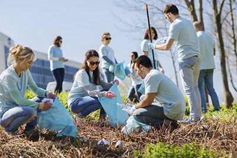

1. Стань волонтером
Тратить свое свободное время, помогая другим или улучшая свое сообщество, не просто благородно. Это также полезно для других и для себя. Например, улучшение окружающей среды, предоставление голоса менее удачливым и заставляет вас чувствовать себя членом команды. Более того, волонтерство может повысить вашу самооценку, развить новые навыки и расширить круг ваших контактов.
Есть около пяти способов, которыми волонтерство помогает вам преуспеть — пока вы делаете хорошо. Другими словами, волонтерство может укрепить ваше портфолио, репутацию и получить хорошую рекламу. И это один из лучших способов отвлечься от работы, поскольку вы сосредотачиваетесь на других, а не на своем бизнесе.
